A very underrated tool to making big gains
Ever notice how the overall market might be flat, but some sectors are skyrocketing? That's because the broader indices, like the NIFTY 50 or Sensex, often don’t tell the full story. Beneath the surface, individual sectors might be showing real growth potential while others lag behind. This is where sectoral indices come into play, an often-overlooked tool that can give traders and investors an edge in spotting market opportunities.
Sectoral indices are a powerful, underrated resource that can help you identify the strongest sectors, even when the overall market seems uncertain. In this blog, we’ll explore what sectoral indices are, why they matter, and how you can use them to boost your stock market gains in 2024.
So, let’s start off with the very basics, what are sectoral indices?
Sectorial indices are stock market indices that track the performance of a specific sector or industry within an economy. Unlike the broad market indices that cover a wide range of industries sector indices focus on companies within a particular segment, such as technology, banking, healthcare, or energy.
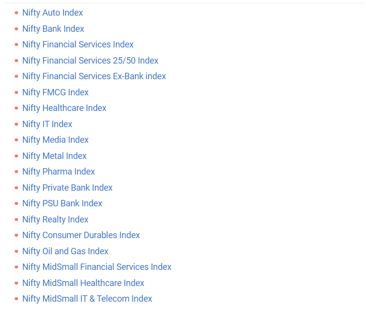
Why sectorial indices matter?
Now, why do I call this an underrated tool? This is because most of the people track the major stock indices like NIFTY 50 and Sensex every day and judge the overall market health using these. However, any investor or trader would know that it is very rare for every stock in the market or every industry in the market to behave the same at the same time. More often than not, while one sector might be struggling to cross its 50-day moving average, the other might be making an all-time high. This is what the sector indices help us in identifying, they tell you the strongest pockets of the market, even when the overall index is telling you a different story.
How sectoral indices work?
A sectoral index is composed of the top companies from a particular industry. For example, the NIFTY bank index includes leading bank companies in India like HDFC bank, ICICI bank and SBI. Similarly, the NIFTY IT index comes of the top tech companies like TCS, Infosys and Wipro. Just like the broader indices, sectoral indices are usually weighted based on the market capitalisation. That is the larger companies have a greater influence on the index movement, for example, in the NIFTY IT index, TCS and Infosys being larger companies and more impact on the index performance, performance than smaller companies.
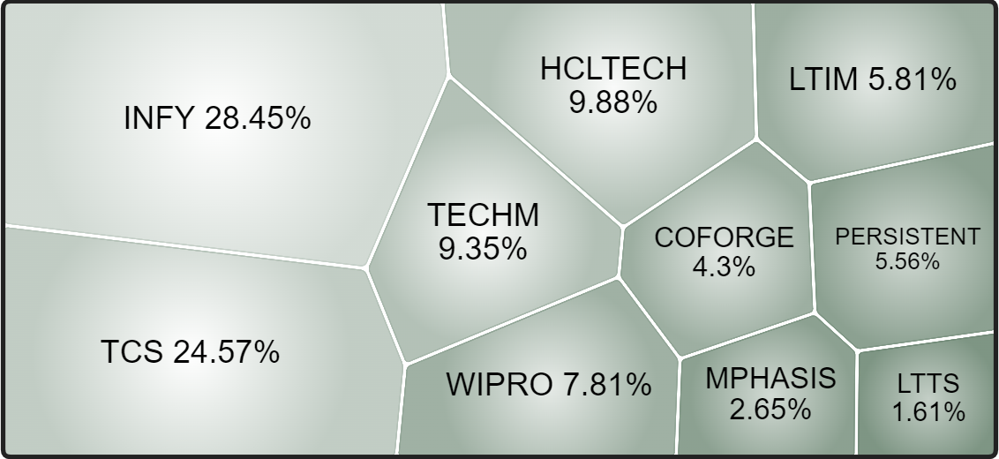
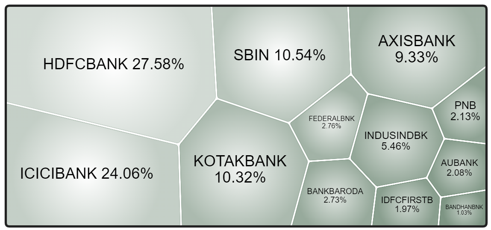
Here the % of each company indicates its contribution to the corresponding sector’s index.
Now let’s come to the main topic, how can these help traders and investors?
The most effective way of using these is to use them for screening stocks and finding potential breakouts. I’ll explain this concept using an example.
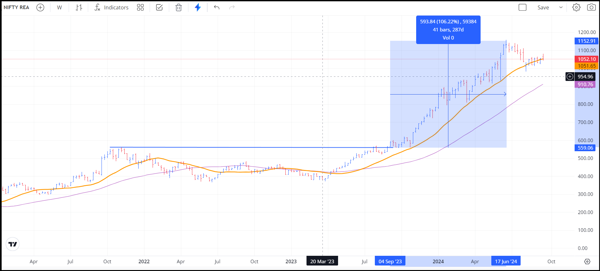
This is one of the bets I had taken using this method. This is a chart of the NIFTY Realty Index, which made a simple horizontal line break-out on 4th September 2023 and from there, the INDEX more than doubled in 287 days (17th June 2024).
This method is also based mainly on break-out trading, something I have talked about earlier in depth. Read ithere!
So, once I found the break-out, I basically wanted to buy the index. Sometimes, this is actually possible as there are index-based ETFs available, but there was none for the realty sector at that time. Then my next option was to buy whatever the index was made up of and in a way make my own index.
There is a slight advantage to not having an ETF available, which is that I could choose the strongest stocks from the index and buy only those. This might provide a slightly higher return than the index (provided the stocks you buy are actually the strong ones).
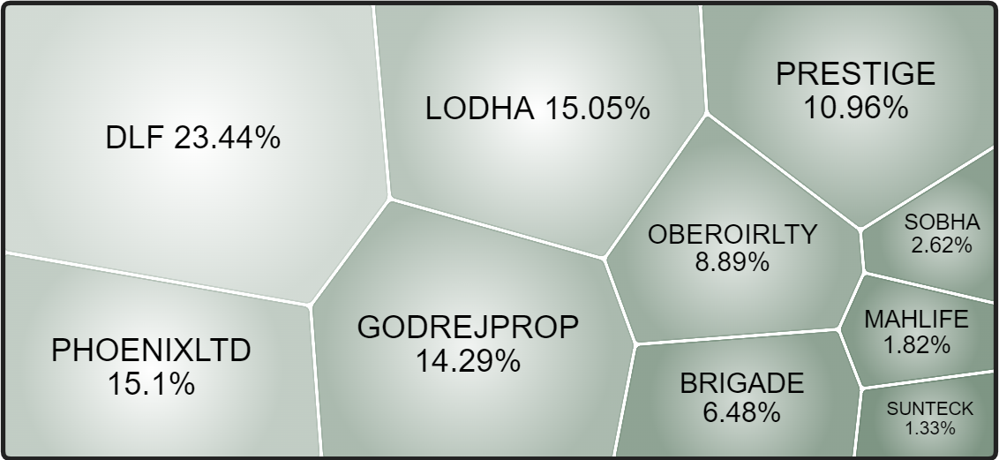
This is the composition of the NIFTY Realty Index at the time I’m writing this article (19/09/2024). It must’ve been slightly different in September 2023, but not much.
I am attaching the charts of the components; you can clearly see that the index actually mimics these.
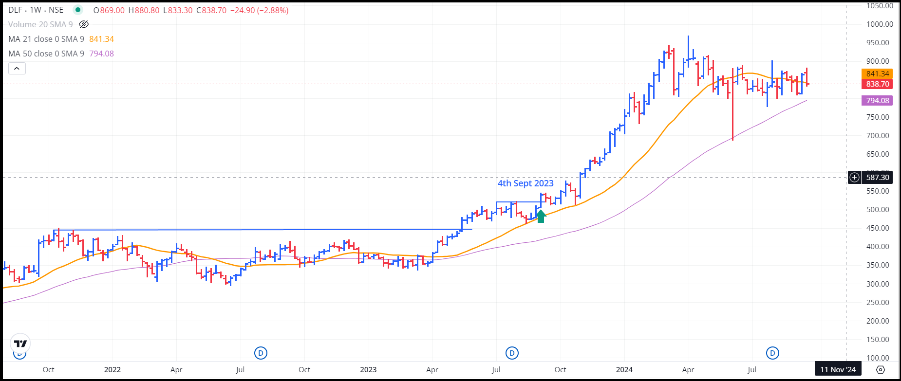
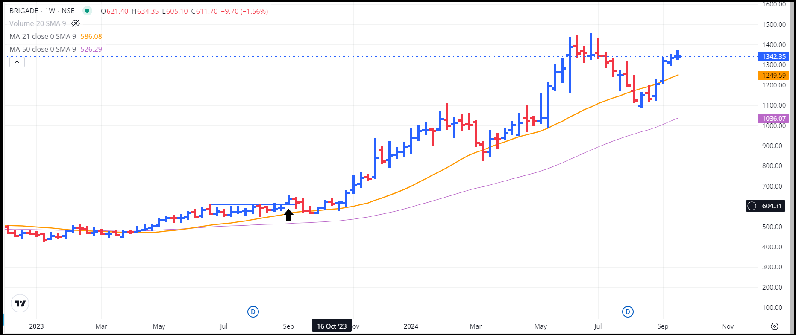
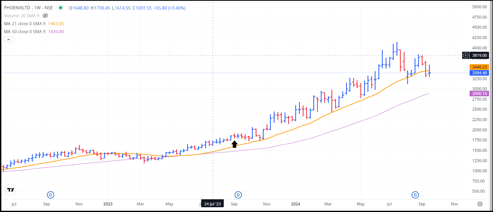
I went through each one of these stocks and bought the ones I thought would perform the best (tbh I almost bought all). And of course, I did make a very good return on these stocks.
But what was the point of me explaining just another investment of mine to you? The point is not to mimic what I did in some other index, it is to understand the idea behind it.
The idea is to narrow down your screening universe, as much as you can, in the most rational way possible, without missing out on a lot of opportunities. If you think of it, in a nutshell, even my previous blog (How to Screen Stocks), was just this. That you want to see great opportunities without having to go through the charts of 4000 stocks.
I'll try and break it down into clear steps:
1. Identify a Breakout in the Sectoral Index
- Start by tracking the performance of various sectoral indices, such as NIFTY Bank, NIFTY IT, or NIFTY Pharma. You can find these on financial news platforms or market analysis tools like TradingView or Zerodha Kite.
- Look for a breakout, which typically occurs when the sector index crosses a key resistance level or moves above important moving averages (such as the 50-day or 200-day moving average).
- Confirm the breakout by checking the volume. A genuine breakout is often accompanied by a significant increase in trading volume.
2. Screen Stocks Within That Sector
- Once you’ve identified a breakout in a sectoral index, the next step is to filter through the stocks that make up that sector. For example, if the NIFTY Bank index breaks out, you’ll want to look at individual stocks like HDFC Bank, ICICI Bank, or SBI.
- Check each stock’s chart to ensure that it mirrors the breakout pattern seen in the sectoral index. Stocks that are outperforming the broader index are ideal candidates for investment.
3. Decide Whether to Buy Individual Stocks or Sectoral ETFs
- If you want exposure to the entire sector, consider purchasing a sector-specific ETF, such as the NIFTY IT ETF or NIFTY Bank ETF. These ETFs track the performance of the whole sector.
- If there’s no sector-specific ETF available, or if you want to maximize gains, you can buy individual stocks that are leading the sector’s performance. Choose the strongest stocks that are showing clear breakout signals and good volume.
4. Monitor the Sector and Set a Stop-Loss
- After making your investment, continue to monitor the sectoral index and the individual stocks. A sudden drop in the sector’s performance could indicate a reversal, which means it may be time to reevaluate your position.
- Set a stop-loss to protect your capital. For breakout trades, a stop-loss can be set just below the breakout level (usually around 2-5%) to limit potential losses if the market reverses.
5. Adjust Your Portfolio as Needed
- As you gain experience with sectoral indices, refine your approach. If a sector continues to perform well, consider adding to your position, either by buying more of the same stocks or diversifying into others within the sector.
- On the flip side, if the sector starts to show weakness or the broader market trend changes, you may want to exit your position or shift to another sector that’s doing better.
Present Scenario:
Here’s an example of whatever I just said. As of 23rd September, 2024, the bank index looks very strong and of course, so do the banking stocks.
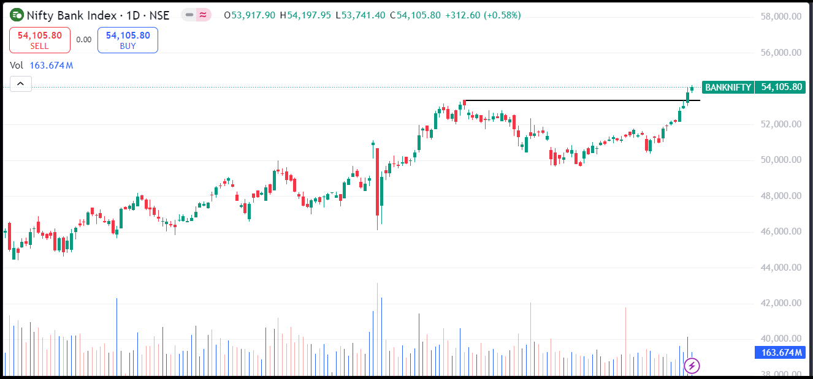
Have a look at the chart above, BANKNIFTY has given a fresh break-out and looks very strong atm. Let’s have a look at the individual banking sector stocks.
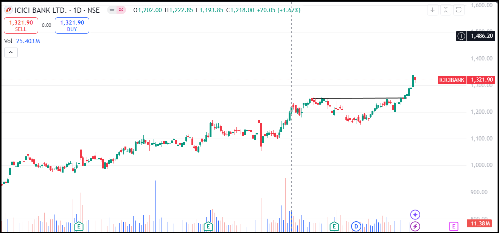
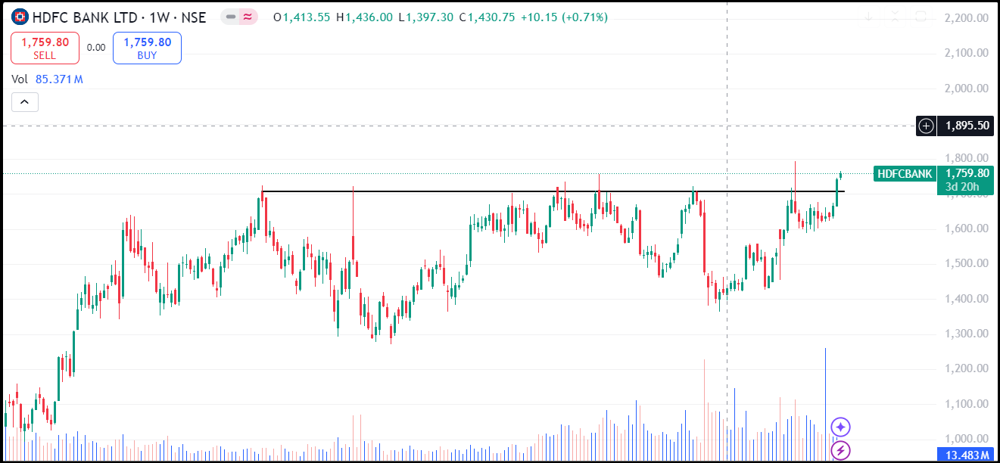
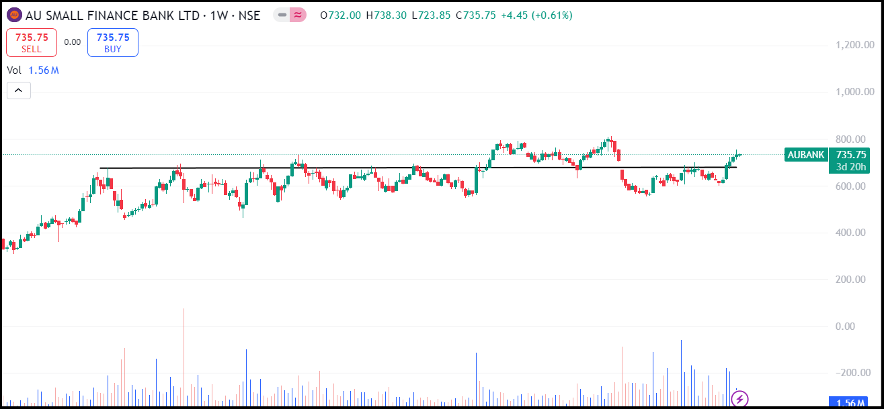
It is very clear from the above charts that all of these are very much worth trading. I can’t say whether they will give phenomenal returns or will fall back, but I can assure you that any good technical analyst will take these trades.
Conclusion
In conclusion, sectoral indices are an underrated yet powerful tool for identifying stock market opportunities. They allow you to zoom in on the strongest performing sectors and companies within those sectors. By tracking breakouts in sectoral indices, you can identify strong trends early on, enabling you to capitalize on them either by investing in individual stocks or through sector-specific ETFs.
So, the next time you feel like the broader market isn’t telling the whole story, dive into sectoral indices. They might just show you where the real opportunities lie!